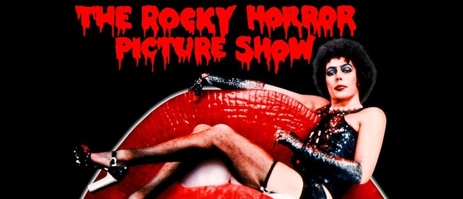

The Rocky Horror Picture Show
The Rocky Horror Picture Show is a 1975 British-American musical comedy horror film by 20th Century Fox, produced by Lou Adler and Michael White and directed by Jim Sharman. The screenplay was written by Sharman and actor Richard O'Brien, who is also a member of the cast.
The film is based on the 1973 musical stage production The Rocky Horror Show, with music, book, and lyrics by O'Brien. The production is a parody tribute to the science fiction and horror B movies of the 1930s through to the early 1960s. Along with O'Brien, the film stars Tim Curry, Susan Sarandon, and Barry Bostwick and is narrated by Charles Gray with cast members from the original Royal Court Theatre, Roxy Theatre, and Belasco Theatre productions including Nell Campbell and Patricia Quinn.